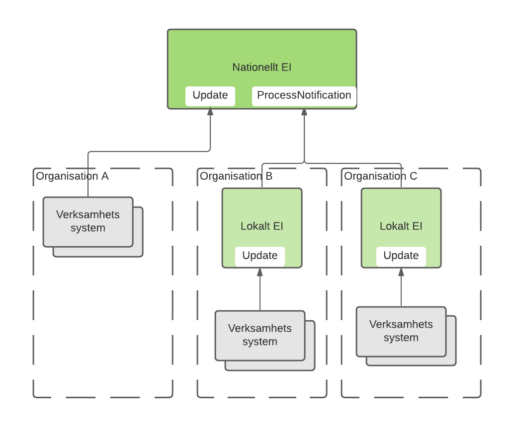
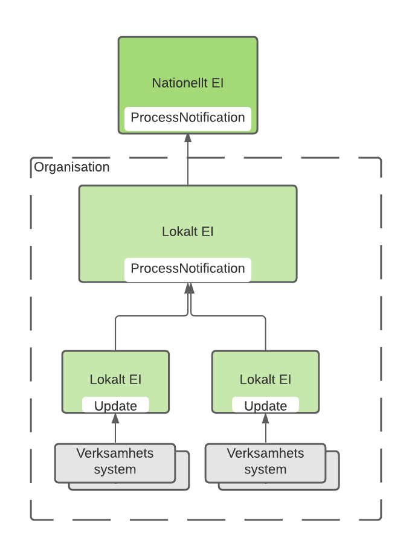
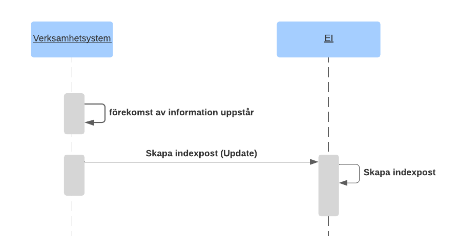
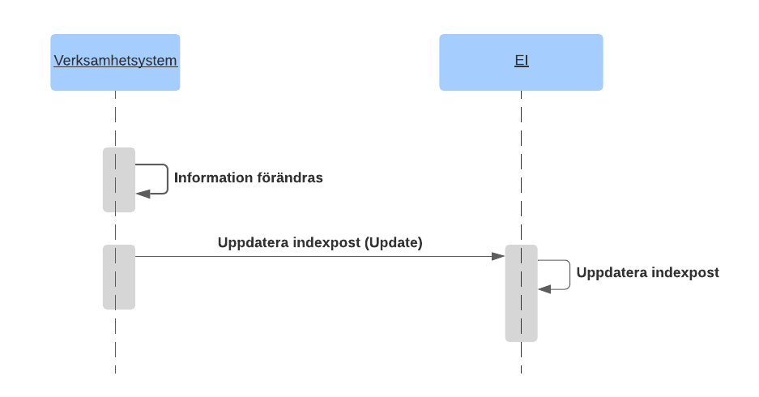
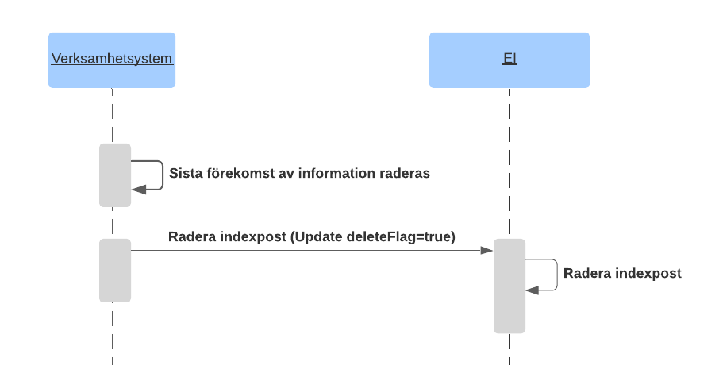
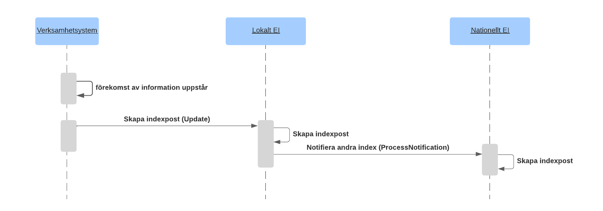
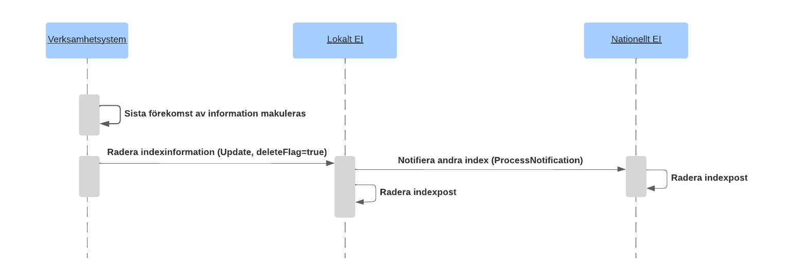
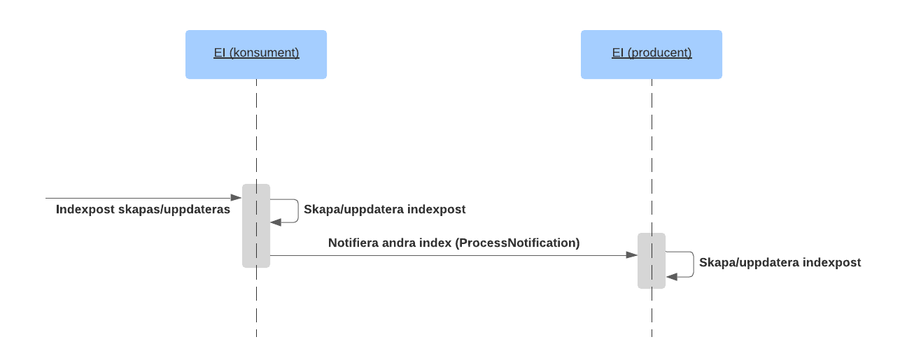
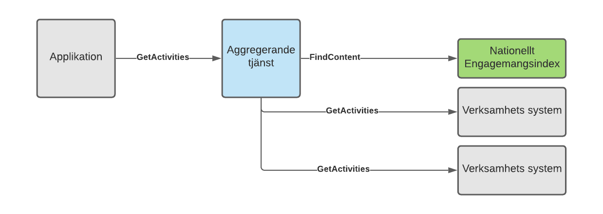
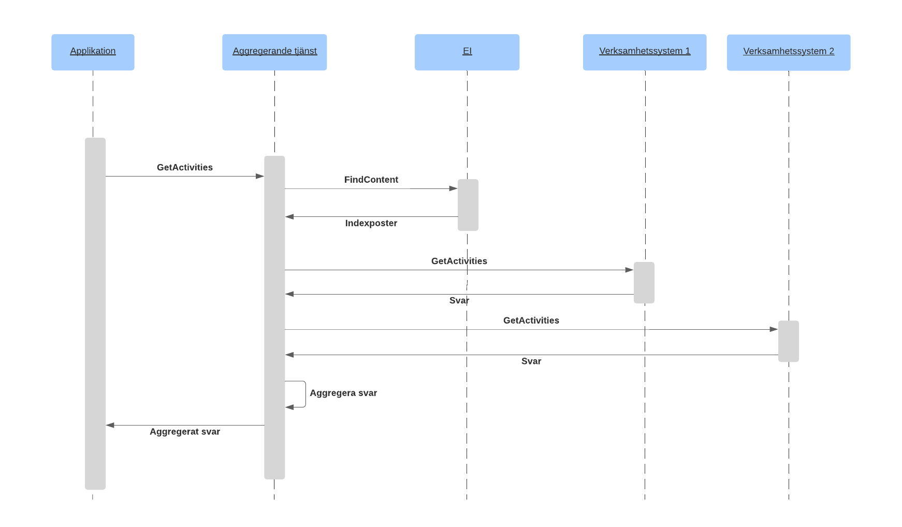

itintegration: engagementindex
1.0.9 - draft
itintegration: engagementindex - Local Development build (v1.0.9) built by the FHIR (HL7® FHIR® Standard) Build Tools. See the Directory of published versions
Engagemangsindex är en stödtjänst vars primära syfte är att stödja realisering av aggregerande tjänster genom att samla information om vilka källsystem som har information av en viss typ för en individ. Frågor mot indexet är personcentrerade.
| Tjänstekontrakt | Innebörd | | :— | :— | | FindContent | Används av konsument för att hämta/söka poster från ett Engagemangsindex. | | Update | Verksamhetssystem skapar/uppdaterar/raderar Engagemangsindex-post. | | ProcessNotification | Engagemangsindex-instanser (andra engagemangsindex-instanser) prenumererar på uppdateringar från ett engagemangsindex genom att vara producent av detta kontrakt. Index som behöver notifiera andra parter agerar konsument. | Tabell 1 Beskrivning av tjänstekontrakt i domänen Informationsmodellen finns beskriven i separat kapitel
Engagemangsindex är (enligt T-boken [Ref4]) en stödtjänst som kan finnas i flera instanser. Det kan finnas en nationell instans samt flera andra instanser hos parter som tillämpar nationella referensarkitekturen. Nedanstående figur beskriver logiskt sambandet mellan instanserna.

Med hjälp av uppdateringskontraktet (Update) kan verksamhetssystem skapa indexposter i enlighet med regelverk för respektive tjänstedomän. Uppdatering kan ske antingen direkt i det nationella indexet eller i en lokal instans. För att nationellt engagemangsindex ska kunna erbjuda sina tjänstekonsumenter en konsoliderad vy av invånarens engagemang, inklusive de som registrerats i en lokal instans, kopplas de olika instanserna av index samman med hjälp av notifieringskontraktet (ProcessNotification).| Exempel: / Verksamhetssystem i organisation A uppdaterar direkt i nationell instans med kontraktet Update. / Lokalt engagemangsindex i organisation B agerar tjänstekonsument för ProcessNotification, och uppdaterar nationellt engagemangsindex via den producenttjänst som nationellt engagemangsindex tillhandahåller. / Nationellt Engagemangsindex agerar endast producent och det lokala i organisation B agerar endast konsument mot det nationella. | | :— | Om det finns situationer där det finns flera engagemangsindex lokalt så kan även dessa agera utifrån en hierarki och i ett sådant fall så ska en lokal ”toppnod” agera producent av ProcessNotification gentemot övriga lokala engagemangsindex och som konsument mot nationellt engagemangsindex.
| Om det finns flera lokala index som agerar både tjänsteproducent och tjänstekonsument av ProcessNotification gentemot varandra så behövs det mekanismer för att undvika så kallad rundgång. | | :— |

Exempel på struktur där flera lokala instanser organiseras i hierarki och den “översta” instansen ansvara för uppdatering av nationell instansFöljande flöden illustrerar den tänkta användningen av ett engagemangsindex.
Kontraktet Update används vid såväl skapande, uppdatering och radering av indexposter.


Vid makulering i källsystem som har en indexpost för den aktuella personen så behöver det övervägas om det fortfarande finns någon information (av den aktuella typen) kvar i källsystemet. Om det inte gör det ska indexposten raderas annars behövs som princip ingen åtgärd om inte den aktuella tjänstedomänens regler ställer krav på uppdatering. För att radera indexposten anropas Update med samma uppgifter för instansens unikhet som befintlig post och deleteFlag sätts till true.

När lokala index som ingår i nationell samverkan uppdateras så ska uppdateringarna konsolideras till nationell instans, detta görs med kontraktet ProcessNotification.
När ett verksamhetsystem lägger till eller uppdaterar en post i ett lokalt index så skapas indexposten lokalt och en notifiering med den skapade postens innehåll skickas till nationell instans

När ett verksamhetssystem tar bort en post i ett lokalt index så skickas en notifiering med postens innehåll (med attributet deleteFlag=true till nationell instans som raderar sin kopia

| Namn | Beskrivning |
|---|---|
| Engagemangsindex (EI) | Stödtjänst där det finns information om vilka verksamhetssystem som har information kring en viss patient. Kan finnas både som nationell och lokala instanser. |
| Verksamhetssystem | Ett system som bär information om en viss patient och som tillgängliggör informationen genom ett tjänstekontrakt och registrerar informationen i engagemangsindex. |
Ett index som ingår i nationell samverkan behöver stödja notifiering av indexuppdateringar för att kunna uppdatera centrala/nationella instanser. I engagemangsindexinstanser som bygger på SKLTP [R5] registreras prenumeranter genom att konfigureras som tjänsteproducenter till ProcessNotification.
När ett index uppdateras, notifierar det sina prenumeranter så att dessa kan skapa eller uppdatera motsvarande poster i sin instans.
När ett index mottar en uppdatering som begär att en indexpost raderas så notifieras övriga index om detta innan posten raderas

Exempel på samverkande index där det första tar emot en uppdatering som ska konsolideras till ett annat index. Det första indexet agerar då tjänstekonsument för kontraktet ProcessNotification och anropar det mottagande indexet som agerar tjänsteproducent.Exempel: Aggregering av patientbunden information från flera källsystem eller verksamheter. Vid användningsmönster aggregering används engagemangsindex som en stödtjänst för realisering av aggregerande tjänster. Aggregerande tjänster är konsumenter av FindContent. Alla interaktioner med Engagemangsindex sker inom en tjänsteplattform. Exemplet beskriver vare sig aspekter kring adressering eller alla ingående komponenter som t ex tjänsteplattformar. För information om detta hänvisas till T-boken [Ref4] Figuren nedan visar strukturen för exemplet.

| Namn | Beskrivning |
|---|---|
| Applikation | Det system som används för att konsumera information. Dvs det system som använder tjänster enligt ett tjänstekontrakt. |
| Aggregerande tjänst | En aggregerande tjänst är en integrationstjänst som för en tjänstekonsument sammanställer en nationell vy av informationen av den typ som är aktuell för tjänsten i fråga. Är beroende av engagemangsindex för att begränsa sökningen till relevanta informationsägare. / För detaljer kring utformning av aggregerande tjänst hänvisas till RIV Tekniska Anvisningar - Tjänsteplattform [Ref7]. |
| Engagemangsindex (EI) | Stödtjänst där det finns information om vilka verksamhetssystem som har information om en viss patient. |
| Verksamhetssystem | Ett system som bär information om en viss patient och som tillgängliggör informationen genom ett tjänstekontrakt och registrerar informationen i engagemangsindex. |

Sekvensdiagram som visar hur en aggregerad tjänst anropas av en applikation och sedan använder engagemangsindex för att lokalisera information i två verksamhetssystem och därefter hämta och aggregera informationen och returnera den till den anropande applikationen. Aggregerande tjänst anropar alla de verksamhetssystem som har eftersökt information parallellt.